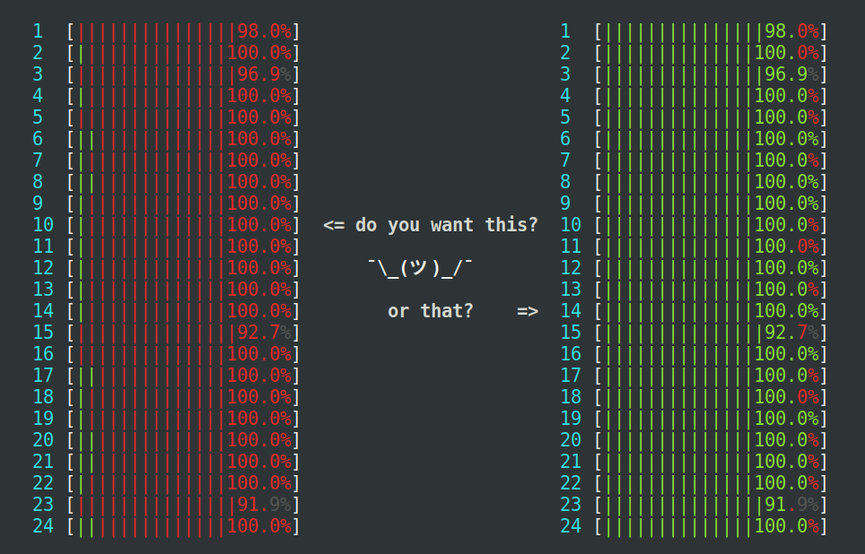
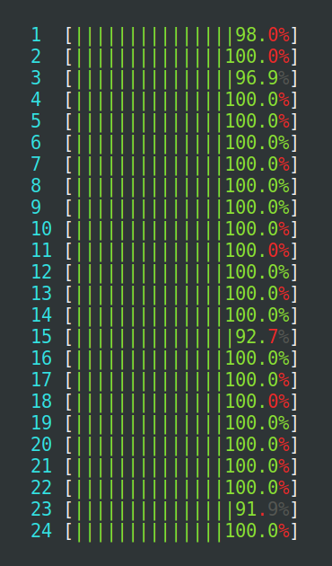

The detectCores() function of the parallel package is probably one of the most used functions when it comes to setting the number of parallel workers to use in R. In this blog post, I’ll try to explain why using it is not always a good idea. Already now, I am going to make a bold request and ask you to:
Please avoid using
parallel::detectCores()in your package!
By reading this blog post, I hope you become more aware of the different problems that arise from using detectCores() and how they might affect you and the users of your code.

Figure 1: Using detectCores() risks overloading the machine where R runs, even more so if there are other things already running. The machine seen at the left is heavily loaded, because too many parallel processes compete for the 24 CPU cores available, which results in an extensive amount of kernel context switching (red), which wastes precious CPU cycles. The machine to the right is near-perfectly loaded at 100%, where none of the processes use more than they may use (mostly green).
TL;DR
If you don’t have time to read everything, but will take my word that we should avoid detectCores(), then the quick summary is that you basically have two choices for the number of parallel workers to use by default;
Have your code run with a single core by default (i.e. sequentially), or
replace all
parallel::detectCores()withparallelly::availableCores().
I’m in the conservative camp and recommend the first alternative. Using sequential processing by default, where the user has to make an explicit choice to run in parallel, significantly lowers the risk for clogging up the CPUs (left panel in Figure 1), especially when there are other things running on the same machine.
The second alternative is useful if you’re not ready to make the move to run sequentially by default. The availableCores() function of the parallelly package is fully backward compatible with detectCores(), while it avoids the most common problems that comes with detectCores(), plus it is agile to a lot more CPU-related settings, including settings that the end-user, the systems administrator, job schedulers and Linux containers control. It is designed to take care of common overuse issues so that you do not have to spend time worry about them.
Background
There are several problems with using detectCores() from the parallel package for deciding how many parallel workers to use. But before we get there, I want you to know that we find this function commonly used in R script and R packages, and frequently suggested in tutorials. So, do not feel ashamed if you use it.
If we scan the code of the R packages on CRAN (e.g. by searching GitHub1), or on Bioconductor (e.g. by searching Bioc::CodeSearch) we find many cases where detectCores() is used. Here are some variants we see in the wild:
cl <- makeCluster(detectCores())
cl <- makeCluster(detectCores() - 1)
y <- mclapply(..., mc.cores = detectCores())
registerDoParallel(detectCores())We also find functions that let the user choose the number of workers via some argument, which defaults to detectCores(). Sometimes the default is explicit, as in:
fast_fcn <- function(x, ncores = parallel::detectCores()) {
if (ncores > 1) {
cl <- makeCluster(ncores)
...
}
}and sometimes it’s implicit, as in:
fast_fcn <- function(x, ncores = NULL) {
if (is.null(ncores))
ncores <- parallel::detectCores() - 1
if (ncores > 1) {
cl <- makeCluster(ncores)
...
}
}As we will see next, all the above examples are potentially buggy and might result in run-time errors.
Common mistakes when using detectCores()
Issue 1: detectCores() may return a missing value
A small, but important detail about detectCores() that is often missed is the following section in help("detectCores", package = "parallel"):
Value
An integer, NA if the answer is unknown.
Because of this, we cannot rely on:
ncores <- detectCores()to always work, i.e. we might end up with errors like:
ncores <- detectCores()
workers <- parallel::makeCluster(ncores)
Error in makePSOCKcluster(names = spec, ...) :
numeric 'names' must be >= 1We need to account for this, especially as package developers. One way to handle it is simply by using:
ncores <- detectCores()
if (is.na(ncores)) ncores <- 1Lor, by using the following shorter, but also harder to understand, one-liner:
ncores <- max(1L, detectCores(), na.rm = TRUE)This construct is guaranteed to always return at least one core.
Shameless advertisement for the parallelly package: In contrast to detectCores(), parallelly::availableCores() handles the above case automatically, and it guarantees to always return at least one core.
Issue 2: detectCores() may return one
Although it’s rare to run into hardware with single-core CPUs these days, you might run into a virtual machine (VM) configured to have a single core. Because of this, you cannot reliably use:
ncores <- detectCores() - 1Lor
ncores <- detectCores() - 2Lin your code. If you use these constructs, a user of your code might end up with zero or a negative number of cores here, which another way we can end up with an error downstream. A real-world example of this problem can be found in continous integration (CI) services, e.g. detectCores() returns 2 in GitHub Actions jobs. So, we need to account also for this case, which we can do by using the above max() solution, e.g.
ncores <- max(1L, detectCores() - 2L, na.rm = TRUE)This is guaranteed to always return at least one.
Shameless advertisement for the parallelly package: In contrast, parallelly::availableCores() handles this case via argument omit, which makes it easier to understand the code, e.g.
ncores <- availableCores(omit = 2)This construct is guaranteed to return at least one core, e.g. if there are one, two, or three CPU cores on this machine, ncores will be one in all three cases.
Issue 3: detectCores() may return too many cores
When we use PSOCK, SOCK, or MPI clusters as defined by the parallel package, the communication between the main R session and the parallel workers is done via R socket connection. Low-level functions parallel::makeCluster(), parallelly::makeClusterPSOCK(), and legacy snow::makeCluster() create these types of clusters. In turn, there are higher-level functions that rely on these low-level functions, e.g. doParallel::registerDoParallel() uses parallel::makeCluster() if you are on MS Windows, BiocParallel::SnowParam() uses snow::makeCluster(), and plan(multisession) and plan(cluster) of the future package uses parallelly::makeClusterPSOCK().
R has a limit in the number of connections it can have open at any time. As of R 4.2.2, the limit is 125 open connections. Because of this, we can use at most 125 parallel PSOCK, SOCK, or MPI workers. In practice, this limit is lower, because some connections may already be in use elsewhere. To find the current number of free connections, we can use parallelly::freeConnections(). If we try to launch a cluster with too many workers, there will not be enough connections available for the communication and the setup of the cluster will fail. For example, a user running on a 192-core machine will get errors such as:
> cl <- parallel::makeCluster(detectCores())
Error in socketAccept(socket = socket, blocking = TRUE, open = "a+b", :
all connections are in useand
> cl <- parallelly::makeClusterPSOCK(detectCores())
Error: Cannot create 192 parallel PSOCK nodes. Each node needs
one connection, but there are only 124 connections left out of
the maximum 128 available on this R installationThus, if we use detectCores(), our R code will not work on larger, modern machines. This is a problem that will become more and more common as more users get access to more powerful computers. Hopefully, R will increase this connection limit in a future release, but until then, you as the developer are responsible to handle also this case. To make your code agile to this limit, also if R increases it, you can use:
ncores <- max(1L, detectCores(), na.rm = TRUE)
ncores <- min(parallelly::freeConnections(), ncores)This is guaranteed to return at least zero (sic!) and never more than what is required to create a PSOCK, SOCK, and MPI cluster with than many parallel workers.
Shameless advertisement for the parallelly package: In the upcoming parallelly 1.33.0 version, you can use parallelly::availableCores(constraints = "connections") to limit the result to the current number of available R connections. In addition, you can control the maximum number of cores that availableCores() returns by setting R option parallelly.availableCores.system, or environment variable R_PARALLELLY_AVAILABLECORES_SYSTEM, e.g. R_PARALLELLY_AVAILABLECORES_SYSTEM=120.
Issue 4: detectCores() does not give the number of “allowed” cores
There’s a note in help("detectCores", package = "parallel") that touches on the above problems, but also on other important limitations that we should know of:
Note
This [=
detectCores()] is not suitable for use directly for themc.coresargument ofmclapplynor specifying the number of cores inmakeCluster. First because it may returnNA, second because it does not give the number of allowed cores, and third because on Sparc Solaris and some Windows boxes it is not reasonable to try to use all the logical CPUs at once.
When is this relevant? The answer is: Always! This is because as package developers, we cannot really know when this occurs, because we never know on what type of hardware and system our code will run. So, we have to account for these unknowns too.
Let’s look at some real-world case where using detectCores() can become a real issue.
4a. A personal computer
A user might want to run other software tools at the same time while running the R analysis. A very common pattern we find in R code is to save one core for other purposes, say, browsing the web, e.g.
ncores <- detectCores() - 1LThis is a good start. It is the first step toward your software tool acknowledging that there might be other things running on the same machine. However, contrary to end-users, we as package developers cannot know how many cores the user needs, or wishes, to set aside. Because of this, it is better to let the user make this decision.
A related scenario is when the user wants to run two concurrent R sessions on the same machine, both using your code. If your code assumes it can use all cores on the machine (i.e. detectCores() cores), the user will end up running the machine at 200% of its capacity. Whenever we use over 100% of the available CPU resources, we get penalized and waste our computational cycles on overhead from context switching, sub-optimal memory access, and more. This is where we end up with the situation illustrated in the left part of Figure 1.
Note also that users might not know that they use an R function that runs on all cores by default. They might not even be aware that this is a problem. Now, imagine if the user runs three or four such R sessions, resulting in a 300-400% CPU load. This is when things start to run slowly. The computer will be sluggish, maybe unresponsive, and mostly likely going to get very hot (“we’re frying the computer”). By the time the four concurrent R processes complete, the user might have been able to finish six to eight similar processes if they would not have been fighting each other for the limited CPU resources.
4d. Running R via CGroups on in a Linux container
This far, we have been concerned about the overuse of the CPU cores affecting other processes and other users running on the same machine. Some systems are configured to protect against misbehaving software from affecting other users. In Linux, this can be done with so-called control groups (“cgroups”), where a process gets allotted a certain amount of CPU cores. If the process uses too many parallel workers, they cannot break out from the sandbox set up by cgroups. From the outside, it will look like the process uses its maximum amount of allocated CPU cores. Some HPC job schedulers have this feature enabled, but not all of them. You find the same feature for Linux containers, e.g. we can limit the number of CPU cores, or throttle the CPU load, using command-line options when you launch a Docker container, e.g. docker run --cpuset-cpus=0-2,8 … or docker run --cpu=3.4 ….
So, if you are a user on a system where compute resources are compartmentalized this way, you run a much lower risk for wreaking havoc on a shared system. That is good news, but if you run too many parallel workers, that is, try to use more cores than available to you, then you will clog up your own analysis. The behavior would be the same as if you request 96 parallel workers on your local eight-core notebook (the scenario in the left panel of Figure 1), with the exception that you will not overheat the computer.
The problem with detectCores() is that it returns the number of CPU cores on the hardware, regardless of the cgroups settings. So, if your R process is limited to eight cores by cgroups, and you use ncores = detectCores() on a 96-core machine, you will end up running 96 parallel workers fighting for the resources on eight cores. A real-world example of this happens for those of you who have a free account on RStudio Cloud. In that case, you are given only a single CPU core to run your R code on, but the underlying machine typically has 16 cores. If you use detectCores() there, you will end up creating 16 parallel workers, running on the same CPU core, which is a very ineffecient way to run the code.
Shameless advertisement for the parallelly package: In contrast to detectCores(), parallelly::availableCores() respects cgroups, and will return eight cores instead of 96 in the above example, and a single core on a free RStudio Cloud account.
My opinionated recommendation

As developers, I think we should at least be aware of these problems, and acknowledge that they exist and they are indeed real problem that people run into “out there”. We should also accept that we cannot predict on what type of compute environment our R code will run on. Unfortunately, I don’t have a magic solution that addresses all the problems reported here. That said, I think the best we can do is to be conservative and don’t make hard-coded decisions on parallelization in our R packages and R scripts.
Because of this, I argue that the safest is to design your R package to run sequentially by default (e.g. ncores = 1L), and leave it to the user to decide on the number of parallel workers to use.
The second-best alternative that I can come up with, is to replace detectCores() with availableCores(), e.g. ncores = parallelly::availableCores(). It is designed to respect common system and R settings that control the number of allowed CPU cores. It also respects R options and environment variables commonly used to limit CPU usage, including those set by our most common HPC job schedulers. In addition, it is possible to control the fallback behavior so that it uses only a few cores when nothing else being set. For example, if the environment variable R_PARALLELLY_AVAILABLECORES_FALLBACK is set to 2, then availableCores() returns two cores by default, unless other settings allowing more are available. A conservative systems administrator may want to set export R_PARALLELLY_AVAILABLECORES_FALLBACK=1 in /etc/profile.d/single-core-by-default.sh. To see other benefits from using availableCores(), see https://parallelly.futureverse.org.
Believe it or not, there’s actually more to be said on this topic, but I think this is already more than a mouthful, so I will save that for another blog post. If you made it this far, I applaud you and I thank you for your interest. If you agree, or disagree, or have additional thoughts around this, please feel free to reach out on the Future Discussions Forum.
Over and out,
Henrik
1 Searching code on GitHub, requires you to log in to GitHub.
UPDATE 2022-12-06: Alex Chubaty pointed out another problem, where detectCores() can be too large on modern machines, e.g. machines with 128 or 192 CPU cores. I’ve added Section ‘Issue 3: detectCores() may return too many cores’ explaining and addressing this problem.
UPDATE 2022-12-11: Mention upcoming parallelly::availableCores(constraints = "connections").